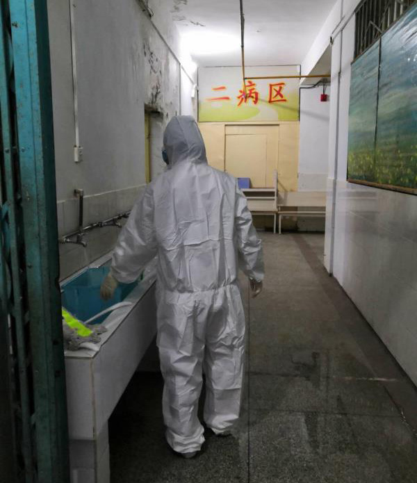
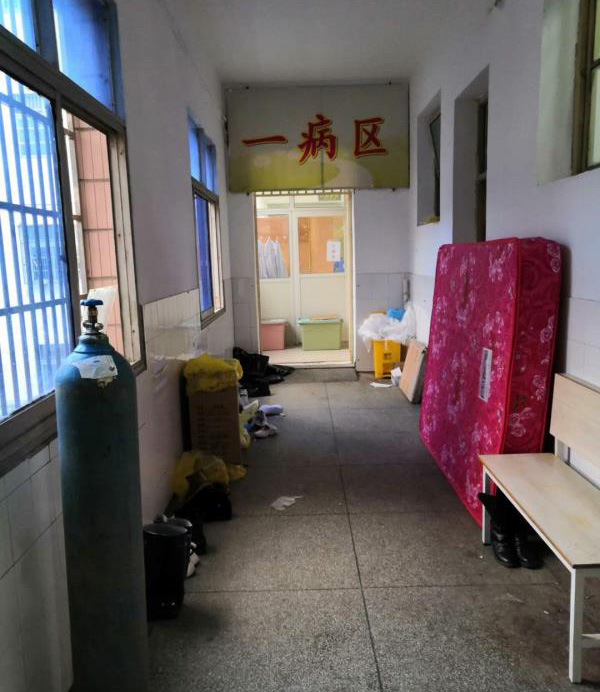

连载·黄冈日记②｜科室住满新冠肺炎患者，5位同事被感染
原文链接 备份链接 特邀作者 杨梅 程定琴 郝诗光 梦轩 澎湃新闻记者 方岸 杜心羽 吴佳颖 整理 2020-03-07 07:43 来源：澎湃新闻 字号 【专题】防控新冠肺炎 【专题】专题｜英雄的城市 英雄的人民 连载·黄冈日记①｜“穿 …
特邀作者 杨梅 程定琴 徐志礼 梦轩 金昊 叶薇 澎湃新闻记者 方岸 杜心羽 吴佳颖 实习生 李佳悦 整理
2020-03-09 07:25 来源：澎湃新闻
字号
【编者按】
新冠病毒给湖北乃至全国带来一场危机，黄冈是这场疫情的重灾区之一。
在这场战役中，黄冈人经历了旁观-卷入-创伤-斗争-反思的过程。我们用亲历者日记连载的形式，试图纵深还原疫情侵袭下的黄冈这60天。
1月18日，黄冈市决定，将空置备用的黄冈市传染病医院改造成新冠肺炎病例集中隔离治疗医院。三天时间，负责改造的黄冈市中心医院近百名职工加班加点完成任务。
黄冈市卫健委也下发文件，抽调黄冈市下属各市县医院的部分医疗力量支援全市新冠肺炎诊疗工作。（斜体字内容为编辑所加，下同）

医护人员从黄冈市中心医院向传染病医院转移设备设施
【杨梅：黄冈市中心医院呼吸内科护士】
1月21日
上午接到通知，明天科室所有人要跟病人一起转到传染病医院（黄冈市二医院），护士长让我们与家人做好沟通，准备好生活用品。
1月22日
今天本来按照排班是中班，白天在家里休息。上午在家将自己的生活用品打包好，跟公公婆婆简单交待了一下，让他们在家里好好的照顾自己和女儿，戴好口罩，不要跟别人多接触，尽量不出门。
吃过中饭，一个人拖着行李去了黄州，临走前，女儿还问我“妈妈要什么时候回家”。因为答应过她，一年级期末考试如果考了一百分就带她坐飞机去海南看海。她努力考了一百分，可是这个寒假不能陪她去海南了。我也不知道会要多久能回家，只能乐观地跟她说，过半个月，没有那么多的病人，妈妈就回来了。
下午三点多，接到科室通知，让我们所有的人去科室帮忙转送病人。
带上行李，下午四点到科室，换上工作服，跟科室的伙伴们一起帮病人清理物品，打包药品，清理科室物资……忙碌了几个小时，病人开始陆续转移去传染病医院。
匆匆吃过晚饭，护士长让我先去二医院帮忙。说实话，我的心里是忐忑的，之前从来没有去过二医院，不知道里面的布局如何，也不知道安排我们住宿的地点在哪里。
一路导航过去，终于在21：30左右赶到了二医院。提着工作服，跟门卫说了一下是护士就进去了。楼道里，堆着各种物品，还有还不及清理的垃圾，到处像是在走迷宫，兜兜转转，寻寻觅觅，都不知道自己应该去哪里。
终于，在三楼的办公室里看到了我们护理部的熊主任，这个点了，才在吃早已冰冷的晚饭，她看到我进来，立即丢下筷子，给我安排工作。原来二医院这边的护士都是下面各县派过来支援的，但很多都不是我们呼吸专科的护士，为了病人的安全及护理工作的顺利开展，我们要一起共同开展工作。
根本没有时间让我熟悉环境，我立马换上防护服，开始了我的二医院的第一个通宵值守。

开始在传染病医院工作
【程定琴：黄冈市中心医院呼吸内科护士】
1月22日
此次临时启用的传染病医院（又叫二医院）在遗爱湖边，我们呼吸内科所有病人都要转移过去。
转运病人真是一件费时费力的事。病情轻的病人，一辆救护车每次可以转四五个人，病情重的一次就只能转运一位，病人需要卧床，需要使用呼吸机或者高流氧治疗仪。等候车辆的间隙，我们护士抽空整理打包病人的药物，以及科室常用的医用用品。想到废弃的医院物资稀缺，想到这是一场持久战，我们把平常在科室觉得好用的、以后在二医院用得上的物品统统都打包了，整整十几大袋。十几包的重物全是我们几位护士一个个抬到一楼，搬上救护车。
一直到凌晨五点半，我们彭金娥护士长才把最后一位病人安全地送上了救护车，至此才完成了所有病人的转运工作。
呼吸内科所有的医护人员也都跟随患者，作战地点由黄冈市中心医院呼吸内科转移到了二医院。我们自己的行囊也搬至距离二医院步行十五分钟的盛捷酒店，此后就以此为“家”，开启了跟新型冠状病毒继续死磕的持久战。
1月23日
我们早早吃完早餐来到二医院准备上班。来到二医院我们都傻眼了，这里的条件差到想哭，地面墙面污渍斑驳，到处垃圾脏兮兮的。我真的不敢想象昨晚转过来的患者是怎么接受这一切的，他们怎么度过这一晚的。
抱怨没有任何意义，只得默默换好防护服，着手准备上班。
转过来的病人分成了三个楼层，分别是二病区、三病区、四病区。我们呼吸内科的原班人马，加上从罗田、英山、黄梅过来的支援人员。当时病情较重的大部分集中在三病区，所以三病区的人手相对多一些。我和来自罗田县的何君和李金三个人负责四病区的20个病人。
可怕的是这里连呼叫铃都没有，也就是说，病人有什么事除了靠扯着喉咙喊，没有其他方式通知我们。所我们只好不停地一个个病房巡视，怕病人有什么突发状况发现不及时，不能及时处理。我们认定一个宗旨，忙乱可以，但不允许出错。我们一一核对清楚病人的姓名，以及需用药的药名。到下午快2点才完成所有病人的输液。接下来又是不休止地换药，拔针。中途午饭送来的时候，我们以最快速度发送到每一个病人手上，让他们趁热吃，因为我们知道这里连微波炉都没有。
忙完一天才发现，我们竟然都忘了自己没喝水，没吃饭。下班脱下防护服时，衣服全都汗湿了。上班忙得热，病人却都一个个喊冷，只能不停给他们加被子。因为这里要么没空调，要么空调坏了。我们向上面反映，下午就安排了专业人员过来维修空调和线路，努力给病人提供一个好的环境。

传染病医院比较简陋杂乱的环境
【徐志礼：麻城市人民医院呼吸内科副主任】
1月22日
经过两天快速培训，今天，我们被安排到黄冈市惠民医院，正式参加新型冠状病毒的肺炎诊疗工作。其它首批轮训的医护人员分别来自红安、英山、罗田、黄梅等县市，也被分至其它新冠肺炎救治点。
此前，一份黄冈市卫健委文件、以及本院医务科的一通电话，打乱了我的一切安排——我被抽调去黄冈市支援新冠肺炎的诊疗工作。
安顿好科室手头的一些事，匆匆驱车去了趟岳父岳母家，算是提前拜个年。
前天一大早，我带着些简单的行李，在麻城市卫健局局长邓进飞、麻城市人民医院院长曹学兰带队下，与我院两位护士同事，还有（麻城市）二医院及中医院的另三位同行一起，赶赴黄冈市卫健委参加轮训。
1月23日
惠民医院感染病区医护团队，主要由黄冈市中医院医护人员组成，加之来自麻城市的医师2名、护士4名。
我作为麻城支援队队长，对麻城6人团队的生活起居安排等临时负责。今天，就一些生活事务方面，我与惠民医院相关负责人进行了沟通；在院感、医疗、设备布置等方面，也向院方提了些合理化建议。
紧张的临床救治工作就此展开了。就在这几天，惠民医院的入院疑似病例由最初的50多人次到快速上升到近百人次。我知道，这场战“疫”开始了。
【孙璐：黄冈市黄州区四海社区网格员】
1月22日
我在黄冈市黄州区四海社区工作，一名社区网格员。
四海社区是企改社区，我们网格员的主要工作：治安秩序维护、矛盾纠纷化解、实有人口管理、政策宣传，便民利民服务等。比如说给居民开各种证明，上门调解邻里纠纷，协助经济普查，人口普查，配合消防每日进行消防排查等。
新冠肺炎疫情开始后，我也多了份担当与责任。今天我发了很多宣传单，挨家挨户到家门上贴通知，呼吁大家不要出门。之前还觉得这次疫情和普通流感差不多，但最近感觉变严重了。
突然想起去年12月有亲戚从武汉回来，她陪孩子在武汉读书，那个时候大家都还不知道这个疫情。今天打了电话，幸亏他们现在还都挺好的，目前还没有发热的情况。
更多没有防备的人被感染，然后被确诊送院治疗。一位感染了新冠肺炎的女儿从武汉回黄冈娘家为病逝的母亲奔丧，不幸将一家10名亲友都感染了。
【梦轩：治愈新冠肺炎患者】
1月21日
住院第三天，我哥哥从深圳赶回来了。我哥当时就站在病房窗外迟迟不肯离开，他眼泪在打转，我知道他担心我。他也不害怕传染，一日三餐都给我送饭，有热腾腾的肉汤，也有青菜和米饭。当时医院里也有病号伙食，尽管不是很好。
其实那时候到处封路，送饭会被劝阻，真的很不容易，我也很感动。我怕哥哥担心，坚持每天跟他汇报病情，比如说“今天比昨天好多了，请你们放心”这样的话，其实也是在鼓励自己要有信心，一定要挺过来！
那段日子里，我的好朋友偶尔也会送来鸡汤，每天从早到晚发消息关心我的病情，鼓励我挺下去。如果有消息说什么药物对治疗“新冠肺炎”有帮助，朋友们都会想方设法帮弄到，送过来。
后面，我坚决拒绝了哥哥和其他朋友的送汤送饭。来往医院或者在路上，都有暴露被感染的风险。我怕他们因我而感染，那我无论如何过意不去。
1月22日
从19日我住进病房开始，医院不断收治到新的病患。每个病房四五个床位，听医生说，医院很快就要住满了。
我们病房4张床位很快满员。邻床病友是一位40岁多岁的武汉人，娘家在黄冈。前一阵子她因年老的妈妈去世回家奔丧，之前就有类似感冒症状，办完丧事她也被确诊“新冠肺炎”，送医隔离治疗。不幸地是，她娘家十个人估计都被感染，陆续全被确诊送医。在病房里，这位病友因为病痛，也因为心理压力大，每天哭泣。据她说，不少亲友都在责怪埋怨她。
另外两位病友，大概都在50岁左右，都是黄冈人。一个是家庭主妇，平常喜欢呼朋聚友打麻将，另外一位经常走村串门做“法事”。如何感染上“新冠病毒”，她们自己都有些说不清楚。
初入医院的几天，治疗护理等有不到位的地方，连医护自身都没办法做好防护。医生、护士戴着普通的一次性医用口罩、眼罩，白大褂外面套一件长风衣似的一次性防护服。病人太多，打针换药的频率很高，医护进入病房的频率却并不高。有时候输液盐水完了，病人按铃几次护士才能进来。我其实很理解：面对新冠肺炎这种高传染疾病，在这种简陋的防护条件下，医生护士也是胆战心惊的，谁能不怕死呢！
住院开始的几天，医院并没有得到新冠肺炎免费治疗的政策。病人的治疗，除了医保报销项目，其他都需要病人自费。
【金昊：治愈新冠肺炎患者】
1月21日
这一天，我在朋友圈看到有个朋友已经确诊感染了“新冠肺炎”。我打电话和她了解情况，说是因为重感冒去黄冈市一家医院住院输液时感染的。我联想到不久前也去过这家医院，感觉心里有点打鼓，于是回家商量后，决定从明天起开始独居隔离。
儿子放假在母亲家。老婆年前上班比较忙，她单位离娘家近，干脆就让她住在娘家了。
我属于比较谨慎的性格。当时家人觉得我单独隔离有点小题大作，我安慰他们说，如果是普通感冒更好，过几天就好了就没事了，免得不小心传染给小孩，大过年的看病不方便。
1月22日
轻微干咳。一个人隔离在家，并开始服用板蓝根，莲花清瘟。
因为快过年，家里存储了不少食物和菜、肉。早饭我自己随便做点，中饭和晚饭由妻子送过来，通常都是中午一起送，晚饭我加热了再吃。
我把自己关在家里。每天看书和手机新闻打发时间。最远就是去过一次楼下3分钟可到的超市采购生活物资。
街上行人稀少，马路上空荡荡的，几分钟才见一辆车驶过。几天以来，各类店铺、小超市都纷纷关门了，只有药店和比较大的超市还开着门，用于满足市民基本生活需要。
1月23日
轻微干咳。
突然看到武汉封城的消息，感觉到事情可能比较严重了，毕竟封城的影响是巨大的，这已经已经不是疾病防控了，而是一场实实在在的疾病战争。
我也开始狂搜相关新闻，对比自己的症状，感觉还是有点差异，也就放下紧张，心想着应该是普通感冒。妻子每天送饭过来时，我会要求她戴上口罩，我自己也会戴上口罩。
我在朋友圈里看到，一位在武汉同济医院做脑科医生（疫情后支援呼吸科）的高中同学被确诊新冠肺炎。明显感觉到，朋友圈和各个微信群里，朋友们关注新冠肺炎多起来了，慌张的气氛渐渐弥漫开来，有人担心这次疫情会不会比SARS严重。
【叶薇：治愈新冠肺炎患者，大四学生】
1月22日
爸爸已经发烧五天不退，我有弱弱地问过他：不会真的是新冠肺炎吧？他还不以为意，但已经打了5天针，还是没有丝毫好转。早上，爸爸打电话给社区诊所医生询问情况，因为我家去过武汉，医生建议赶紧去市医院看看。
上午爸爸和妈妈一起去麻城市人民医院检查身体，CT显示肺部大量感染，因满足去过武汉、发烧等条件，爸爸直接被收治进行隔离治疗。作为爸爸的密切接触者的我，此时也已经间歇性持续低烧，我和妈妈决定明天要一起去医院检查一下。
晚上我已经有害怕，趁着在卫生间洗漱的时候我发了条微博：
我是湖北黄冈麻城人，今天我爸爸因为疑似肺炎被隔离了，还要住院观察……十号的时候我家有自驾去武汉，并去了人口密集区买衣服……我有持续性低烧，之前嗓子不舒服吞口水都疼，打了两天针感觉好了，但鼻子还是有点堵。我想问下我们这些症状是武汉肺炎（编者注：新冠肺炎）吗，大家有没有什么意见可告知，非常感谢。我才大四，还没有工作，不想人生像开了加速器一样……
发完微博后，我想和妈妈说说话，我们俩一起坐到三楼桌子旁。这个时候我很担心爸爸，他几乎没有选择权地住进医院。明天我和妈妈都要去检查，无论是我还是妈妈在住进医院，对于我们这个三口之家，都难以接受。
如果我进去了，我妈怎么办？我长这么大她都很少一个人在家，小时候遇到爸爸出差，我妈甚至会来和我睡，而且我妈连体温计都不认识，如果她一个人在家发烧了怎么办？如果我妈进去了，我一个小孩又该怎么办？我连我们家银行卡的密码都不知道，他们需要钱我都拿不到。于是，妈妈把我家银行卡的密码一个个告诉我，还安慰我说“哭出来好点，哭出来就舒服了”。
我也不是想哭，就是情难自禁。哎！都这时候了，我们一家人得做好打一场硬仗的准备了。这一晚，妈妈只跟我表达过一个想法：明天我们两个人一起去，也一定要一起回来哈，答应我要一起回来。
我回答：“嗯。”

麻城市人民医院发热门诊附近的导引牌
1月23日
早上七点一到，我和妈妈便从床上爬了起来。昨天爸爸突然被隔离治疗，没有带任何东西，今天我们也要去医院给他送洗漱用品。
早上的医院还很安静，大家都带着口罩，除了呼呼吹来的风，只有阵阵咳嗽声传来。
我们先去的感染科住院部，此时医院已经用隔离带划分好了各种区域，除了住院病人，只有送东西的人可以跨过感染科前面的这条隔离带。感染科的伸缩门被一把大锁锁着，我们需要先给爸爸打电话，爸爸再按铃叫护士，护士下来代领东西，这中间颇要一段时间。
我们也遇见了同样戴口罩来送东西的两个人。我很想问问别人家的情况，但妈妈瞟了我一眼，示意我不要多说话，我便也不好再出声了。
护士终于下来了，向我们确认好床号和病人姓名这才开门把东西拿进去，还一脸严肃地叮嘱我们：“你们家人送东西要一次送齐，不要一直往这跑，这里不是什么好地方，我们也很忙。”我们只得应着，看来不仅是我们，医院的护士也很紧张吧。
接下来，我和妈妈去门诊登记信息，然后量体温、挂号，等上三五分钟凑齐五六个人，护士便会把我们一起带到发热门诊，我们再在这里等待叫号。
发热门诊在单独的一小栋房子里，进门是一条大概两人宽、三五米长的小道，护士便在这里收大家的挂号条。更多的人为了避免交叉感染，还是选择等在外面。这里咳嗽的人更多一些。
我和妈妈早上来，一直到中午才轮到我们看病。医生问诊完，便是去做血常规和CT，血常规大概半个小时可以拿结果，CT应该是等到了下午三四点。我稍稍看了下CT报告单，我妈应该是只有支气管炎，而我应该是肺部有炎症了。
果然，医生先看完我妈的片子再看我的，问了句：“你妈没有感染，你怎么被感染了呢？”听到这句话，我应该是有点歉意的笑了笑。我想没有办法了，我已经被感染了，只有接受了。CT片子显示，我双肺下叶少许感染。医生建议早治疗，但也不强制我住院，甚至还微笑地推荐我去给对面那位医生看看，对面医生是感染科专家。
医生说，如果要住院的话，我就得直接办理住院手续。我有点害怕，但是万一真的是这个病，我不住院回去也是祸害人。
纠结再三，我办了住院手续。因为到处都有隔离带限制，妈妈不能送我过去，我便只有硬着头皮往前走了，可是却被告知感染科里已经住满了，如果再进人，就必须两人一间，我不愿意冒这个险，与医生协商后，决定回家住一晚，第二天麻城就有试剂盒了，我直接来做试剂盒检查。
这晚下起蒙蒙细雨，我带着帽子等着已经回家的妈妈来接我。我只想着，今天我终于还是回了家，我答应妈妈的事我做到了。
（文中梦轩、叶薇为化名）
【未完待续】
(本文来自澎湃新闻，更多原创资讯请下载“澎湃新闻”APP)
关键词 >> 抗疫日记,黄冈,抗疫
原文链接 备份链接 特邀作者 杨梅 程定琴 郝诗光 梦轩 澎湃新闻记者 方岸 杜心羽 吴佳颖 整理 2020-03-07 07:43 来源：澎湃新闻 字号 【专题】防控新冠肺炎 【专题】专题｜英雄的城市 英雄的人民 连载·黄冈日记①｜“穿 …
原文链接 备份链接 “他是一个英雄” 2月18日上午10点54分，武昌医院院长刘智明因感染新冠肺炎，经抢救无效去世，享年51岁。 “刘院长是一个很负责的人，内心非常强，我们医院的同事都很敬重他。他长得高高大大的，很有才气，结果说没就 …
原文链接 备份链接 澎湃新闻记者 赵思维 发自武汉 实习生 夏梦洁 从1月23日21时许发出第一条求助微博，25岁的新冠肺炎痊愈者武康发布了50余条微博，粉丝从1000涨至现在的179万粉丝。 这些微博记录了他从发病住不进院的无助、被病魔 …
原文链接 备份链接 ********** *****黄冈的第一个病例是一名司机，是给武汉的华南海鲜市场运送海鲜的。**********因为业务原因，这个司机在黄冈的黄州中心菜市场逗留过。***** 黄州区人民医院的医护人员在防护服背面贴上 …
原文链接 备份链接 看到“7例肺炎”的新闻后，小熊赶回了武汉。但妈妈还是病倒了。目前居家隔离的妈妈病情有所好转，可小熊还是一刻不敢放松。 文 | 吴美芬 1月1日，家住武汉的小熊在贵阳出差。这天他第一次听说了“新型肺炎”，新闻里说武汉有7 …